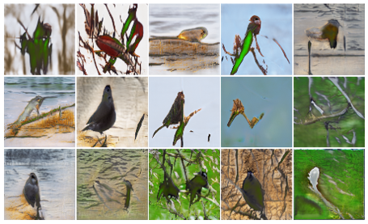

Overview
Skripsi ini mengimplementasikan model FastGAN — arsitektur Generative Adversarial Network yang ringan dan dirancang khusus untuk sintesis citra dengan data terbatas (few-shot image synthesis) — untuk menghasilkan citra burung sintetis pada domain ornitologi. Penelitian menggunakan dataset Caltech-UCSD Birds-200-2011 (CUB-200-2011) yang berisi 11.788 citra dari 200 spesies burung. Model dilatih pada empat skenario ukuran dataset (1.000, 2.000, 5.000, dan 10.000 citra) hingga 100.000 iterasi dengan resolusi 1024×1024 piksel, kemudian dievaluasi secara kuantitatif menggunakan metrik Fréchet Inception Distance (FID) dan Inception Score (IS), serta secara kualitatif melalui analisis visual terhadap struktur morfologis hasil sintesis.
Tools & Technologies
The Problem & The Solution
The Problem
GAN konvensional membutuhkan puluhan hingga ratusan ribu citra untuk menghasilkan sintesis berkualitas tinggi, sehingga sulit diterapkan pada domain dengan keterbatasan data seperti ornitologi. Domain biologis juga menuntut ketepatan detail morfologis (fine-grained features) seperti pola bulu dan bentuk paruh — tantangan yang belum banyak dieksplorasi pada model generatif few-shot, apalagi dengan keragaman 200 spesies burung yang berbeda karakteristik visualnya.
The Solution
Menerapkan arsitektur FastGAN yang mengintegrasikan Skip-Layer Excitation (SLE) untuk aliran informasi multi-skala, self-supervised discriminator untuk memperkaya representasi fitur tanpa label tambahan, serta DiffAugment untuk mencegah overfitting pada dataset kecil. Kombinasi ini memungkinkan model tetap stabil dan efisien dilatih pada dataset CUB-200-2011 dengan ukuran few-shot, sambil mempertahankan keragaman dan realisme hasil sintesis.
Key Features
Skip-Layer Excitation
Menghubungkan fitur dari layer resolusi rendah ke resolusi tinggi untuk konsistensi detail visual multi-skala.
Self-Supervised Discriminator
Discriminator belajar merekonstruksi patch citra sebagai tugas tambahan, meningkatkan stabilitas pelatihan.
DiffAugment
Augmentasi color & translation diterapkan langsung dalam pelatihan untuk mencegah overfitting pada data terbatas.
Multi-Scenario Training
Empat skenario dataset (1k, 2k, 5k, 10k citra) untuk menganalisis pengaruh ukuran data terhadap kualitas sintesis.
Evaluasi FID & IS
Penilaian kuantitatif menggunakan Fréchet Inception Distance dan Inception Score pada tiap checkpoint pelatihan.
Analisis Morfologis
Inspeksi visual dan analisis kualitatif terhadap struktur anatomi burung hasil sintesis per komponen tubuh.
Key Impact
Challenges & Learnings
Keragaman morfologis antar-spesies
200 spesies burung dengan variasi bentuk, warna, dan pola bulu memperluas ruang distribusi fitur yang harus dipelajari model.
Detail fine-grained sulit direkonstruksi
Tekstur bulu halus dan bentuk paruh presisi masih menjadi tantangan karena keterbatasan arsitektur tanpa mekanisme attention.
Artefak visual pada latar belakang
Fenomena background fusion dan color bleeding kadang muncul ketika objek burung menyatu dengan latar belakang yang kompleks.
Hubungan non-linear antara ukuran data dan kualitas
FID terbaik justru dicapai pada subset menengah (2.000 citra), bukan subset terbesar — menunjukkan model lightweight FastGAN lebih cepat konvergen pada data menengah, sementara subset 10.000 citra mengindikasikan underfitting pada batas 100.000 iterasi.
Project Gallery


